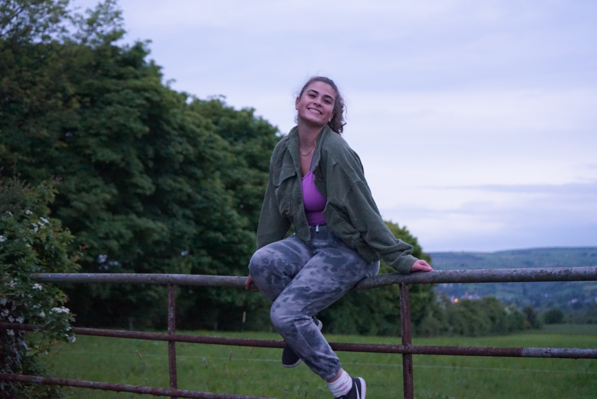

Meet the Wanderer
Hi, I'm Arcadia! Traveling has been part of my life since before I could walk (literally). My first trip was to Ireland at two months old, and since then its been my mission to travel to as many places as possible. My life goal is to someday make it to all 195 UN recognized countries.
How It All Began
I grew up in a family that valued stories from around the world—music, food, and the tiny customs that make every place unique. As I got older, I started keeping travel journals filled with notes on markets, festivals, and conversations with strangers who became friends.
Travel, to me, isn't just about seeing landmarks. It's about learning how people live, love, and celebrate. It's about finding home wherever you land.
Quick Facts About Me
- I've visited 18 countries and 14 U.S. states.
- I've lived temporarily in Spain and Denmark.
- I never travel without my journal and a good playlist downloaded.
- Favorite travel snack: airport plantains and Dunkin' coffee.
What Travel Means to Me
- Understanding cultures through food and history.
- Respecting every place I visit by learning its customs.
- Supporting local makers and small communities.